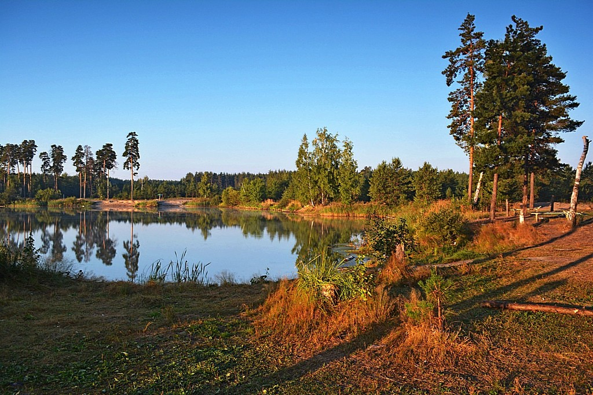
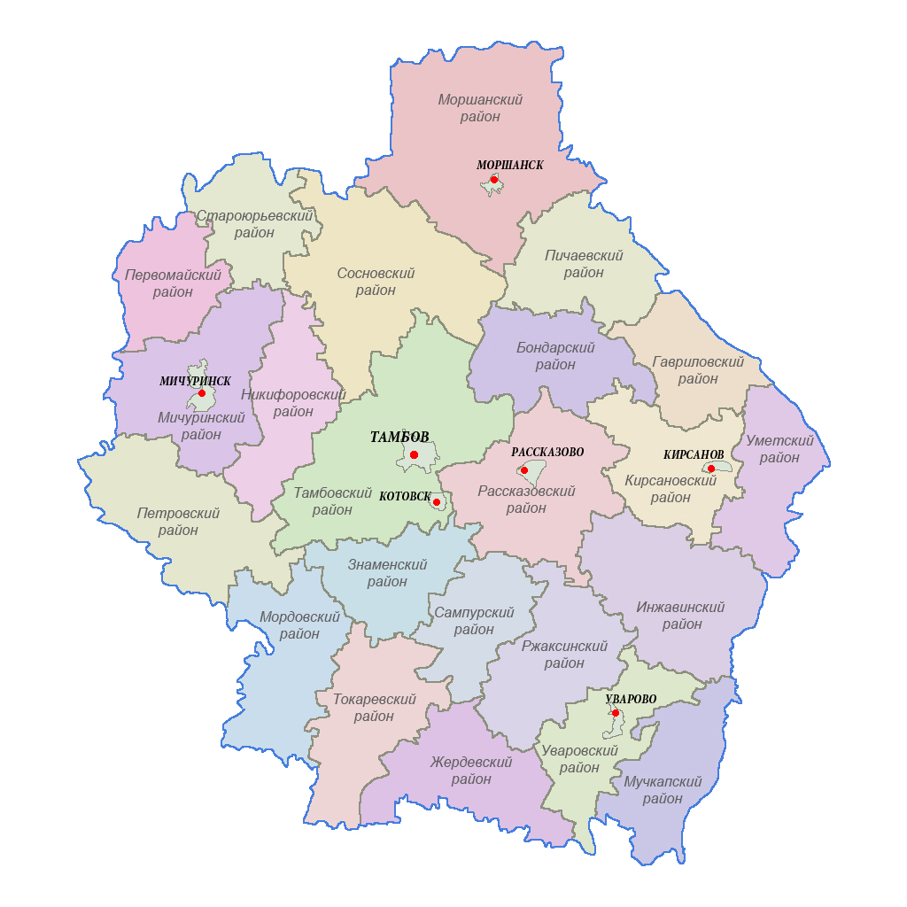

<!DOCTYPE html>
<html lang="ru">
<head>
  <meta charset="UTF-8" />
  <meta name="viewport" content="width=device-width, initial-scale=1.0, maximum-scale=5.0, user-scalable=yes, viewport-fit=cover" />
  <title>Тамбовщина. Сейчас</title>
  <script src="https://unpkg.com/vue@3/dist/vue.global.js"></script>
  <script src="https://unpkg.com/vue-router@4"></script>
  <style>
    * { margin: 0; padding: 0; box-sizing: border-box; }
    body {
      font-family: 'Inter', system-ui, -apple-system, sans-serif;
      background: #f4f2ee;
      color: #1a1a1a;
      line-height: 1.5;
      padding-bottom: 80px; /* для нижнего таб-бара */
    }
    a { color: inherit; text-decoration: none; }
    img { max-width: 100%; display: block; }

    .container { max-width: 1240px; margin: 0 auto; padding: 0 20px; }

    /* Шапка */
    .header {
      background: rgba(255,255,255,0.92);
      backdrop-filter: blur(12px);
      box-shadow: 0 4px 20px rgba(0,0,0,0.04);
      position: sticky;
      top: 0;
      z-index: 1000;
      border-bottom: 1px solid rgba(0,0,0,0.04);
    }
    .header-inner {
      display: flex;
      align-items: center;
      justify-content: space-between;
      flex-wrap: wrap;
      padding: 14px 0;
      gap: 18px;
    }
    .logo {
      display: flex;
      align-items: center;
      gap: 10px;
      font-weight: 700;
      font-size: 1.4rem;
      color: #1e3a5f;
      padding-left: 10px; /* небольшой отступ */
    }
    .logo svg { height: 38px; width: 38px; flex-shrink: 0; }
    .search-box {
      position: relative;
      flex: 1;
      min-width: 200px;
      max-width: 100%;
    }
    .search-box input {
      width: 100%;
      padding: 10px 16px;
      border: 1px solid #e0ded9;
      border-radius: 28px;
      font-size: 0.95rem;
      background: #fff;
    }
    .search-box input:focus {
      outline: none;
      border-color: #b13e3e;
      box-shadow: 0 4px 14px rgba(177,62,62,0.12);
    }
    .suggestions {
      position: absolute;
      top: calc(100% + 6px);
      left: 0;
      right: 0;
      background: #fff;
      border: 1px solid #eee;
      border-radius: 16px;
      box-shadow: 0 16px 32px rgba(0,0,0,0.08);
      z-index: 2000;
      max-height: 360px;
      overflow-y: auto;
      padding: 6px 0;
      width: 100%; /* совпадает с поисковой строкой */
    }
    .suggestion-item {
      display: flex;
      align-items: center;
      gap: 12px;
      padding: 12px 16px;
      cursor: pointer;
    }
    .suggestion-item:hover { background: #f8f6f2; }
    .suggestion-item img { width: 44px; height: 44px; border-radius: 10px; object-fit: cover; background: #eee; }
    .suggestion-item .info { flex: 1; }
    .suggestion-item .title { font-weight: 600; font-size: 0.9rem; }
    .suggestion-item .desc { font-size: 0.8rem; color: #777; }
    .suggestion-item .badge {
      font-size: 0.7rem;
      background: #c3e6cb;
      color: #155724;
      padding: 3px 10px;
      border-radius: 14px;
      font-weight: 500;
    }

    /* Баннер на главной */
    .hero-image {
      width: 100%;
      max-height: 400px;
      object-fit: cover;
      border-radius: 20px;
      margin: 20px 0;
      box-shadow: 0 4px 16px rgba(0,0,0,0.05);
    }

    /* Лента и карточки */
    .feed { display: grid; grid-template-columns: repeat(auto-fill, minmax(300px, 1fr)); gap: 28px; padding: 10px 0 30px; }
    .fact-card {
      background: #fff;
      border-radius: 20px;
      overflow: hidden;
      box-shadow: 0 6px 18px rgba(0,0,0,0.04);
      transition: transform 0.25s, box-shadow 0.25s;
      display: flex;
      flex-direction: column;
    }
    .fact-card:hover { transform: translateY(-6px); box-shadow: 0 18px 32px rgba(0,0,0,0.08); }
    .fact-card img { width: 100%; height: 210px; object-fit: cover; background: #eae6df; }
    .fact-card .content { padding: 18px 20px; flex: 1; display: flex; flex-direction: column; gap: 12px; }
    .fact-card h3 { font-size: 1.25rem; color: #1e3a5f; }
    .fact-card p { font-size: 0.92rem; color: #555; flex: 1; }
    .fact-card .meta { display: flex; gap: 10px; flex-wrap: wrap; }
    .fact-card .tag {
      background: #f0ece4;
      color: #6b5e4e;
      padding: 4px 10px;
      border-radius: 16px;
      font-weight: 500;
      font-size: 0.8rem;
    }
    .actions { display: flex; justify-content: space-between; align-items: center; margin-top: 10px; gap: 10px; }
    .btn {
      display: inline-flex;
      align-items: center;
      justify-content: center;
      padding: 9px 20px;
      background: #b13e3e;
      color: #fff;
      border: none;
      border-radius: 24px;
      font-weight: 600;
      text-decoration: none;
      box-shadow: 0 4px 10px rgba(177,62,62,0.2);
    }
    .btn:hover { background: #9a2e2e; }
    .btn-outline {
      background: transparent;
      border: 1.5px solid #b13e3e;
      color: #b13e3e;
      padding: 8px 18px;
      border-radius: 24px;
      font-weight: 600;
      text-decoration: none;
    }
    .btn-outline:hover { background: #b13e3e; color: #fff; }
    .proof-badge {
      display: inline-flex;
      align-items: center;
      gap: 6px;
      background: #ecf5ea;
      color: #3a4f3a;
      border: 1px solid #c5d9c5;
      padding: 8px 18px;
      border-radius: 28px;
      font-size: 0.82rem;
      font-weight: 600;
      text-decoration: none;
    }
    .proof-badge:hover { background: #e0f0dc; }

    /* Аккордеон */
    .proof-block {
      background: #faf8f5;
      border: 1px solid #e0d6c5;
      border-radius: 16px;
      margin: 26px 0;
      overflow: hidden;
    }
    .proof-header {
      display: flex;
      align-items: center;
      gap: 12px;
      padding: 18px 22px;
      cursor: pointer;
      background: #f5efe4;
      font-weight: 600;
      color: #5e4630;
    }
    .proof-header:hover { background: #efe4d6; }
    .proof-title { flex: 1; }
    .toggle-icon svg { transition: transform 0.35s; }
    .proof-block.expanded .toggle-icon svg { transform: rotate(180deg); }
    .proof-content {
      max-height: 0;
      overflow: hidden;
      transition: max-height 0.5s ease, padding 0.3s;
      padding: 0 22px;
      background: #fffcf8;
    }
    .proof-block.expanded .proof-content { max-height: 3500px; padding: 20px 22px; }
    .proof-adaptation-text { margin-bottom: 14px; font-size: 0.95rem; line-height: 1.7; color: #3d3226; }
    .proof-original-text { font-style: italic; color: #6b5e4e; border-left: 3px solid #d9c9a8; padding-left: 14px; margin-bottom: 14px; }
    .proof-scan { width: 100%; max-height: 420px; object-fit: contain; background: #e8e2d6; border-radius: 8px; margin: 12px 0; cursor: pointer; }
    .proof-code { font-family: monospace; background: #f0ede5; padding: 8px 16px; border-radius: 8px; display: inline-block; margin-bottom: 14px; }
    .proof-pdf-btn { display: inline-block; background: #b13e3e; color: #fff; padding: 9px 20px; border-radius: 22px; text-decoration: none; }
    .proof-pdf-btn:hover { background: #9a2e2e; }

    /* Страницы */
    .article-detail, .document-detail, .timeline-page, .search-page { padding: 30px 0; }
    .article-detail { position: relative; max-width: 760px; margin: 0 auto; }
    .back-arrow {
      position: absolute;
      left: -60px;
      top: 8px;
      width: 40px;
      height: 40px;
      display: flex;
      align-items: center;
      justify-content: center;
      background: #fff;
      border-radius: 50%;
      box-shadow: 0 2px 8px rgba(0,0,0,0.04);
      color: #555;
    }
    .back-arrow:hover { background: #f5f5f5; color: #111; }
    .article-detail h1 { font-size: 2.1rem; color: #1e3a5f; margin-bottom: 14px; }
    .article-lead { font-size: 1.2rem; color: #555; margin-bottom: 24px; font-style: italic; border-left: 4px solid #b13e3e; padding-left: 16px; }
    .article-text { font-size: 1rem; line-height: 1.8; color: #333; white-space: pre-line; margin-bottom: 32px; }
    .gallery { display: flex; gap: 14px; flex-wrap: wrap; margin: 26px 0; }
    .gallery img { width: calc(33.333% - 10px); border-radius: 12px; }

    /* Карта упрощённая */
    .map-container {
      position: relative;
      display: inline-block;
      width: 100%;
      border-radius: 20px;
      overflow: hidden;
      box-shadow: 0 8px 24px rgba(0,0,0,0.04);
      margin-top: 10px;
    }
    .map-marker {
      position: absolute;
      transform: translate(-50%, -100%);
      cursor: pointer;
      z-index: 10;
    }
    .marker-dot {
      width: 16px;
      height: 16px;
      background: #b13e3e;
      border: 3px solid #fff;
      border-radius: 50%;
      box-shadow: 0 2px 6px rgba(0,0,0,0.3);
    }
    .marker-popup {
      position: absolute;
      bottom: 24px;
      left: 50%;
      transform: translateX(-50%);
      background: #fff;
      padding: 10px 14px;
      border-radius: 12px;
      box-shadow: 0 4px 16px rgba(0,0,0,0.15);
      font-size: 0.85rem;
      white-space: normal;
      width: 200px;
      z-index: 20;
      text-align: center;
    }

    /* Таймлайн */
    .timeline { position: relative; padding: 20px 0; }
    .timeline-event {
      display: flex;
      gap: 22px;
      padding: 18px 0 18px 36px;
      border-left: 3px solid #b13e3e;
      position: relative;
    }
    .timeline-event::before {
      content: '';
      width: 14px;
      height: 14px;
      background: #b13e3e;
      border-radius: 50%;
      position: absolute;
      left: -8.5px;
      top: 24px;
      border: 2px solid #fff;
      box-shadow: 0 0 0 2px #b13e3e;
    }
    .timeline-date { font-weight: 700; color: #b13e3e; min-width: 90px; }
    .search-filters {
      display: flex;
      flex-wrap: wrap;
      gap: 22px;
      margin: 24px 0;
      align-items: center;
      background: #fff;
      padding: 18px 22px;
      border-radius: 18px;
    }
    .filter-group { display: flex; align-items: center; gap: 10px; }

    /* Нижний таб-бар */
    .tab-bar {
      position: fixed;
      bottom: 0;
      left: 0;
      right: 0;
      background: rgba(255,255,255,0.95);
      backdrop-filter: blur(12px);
      box-shadow: 0 -2px 16px rgba(0,0,0,0.05);
      display: flex;
      justify-content: space-around;
      align-items: center;
      padding: 8px 0 12px;
      z-index: 1000;
    }
    .tab-item {
      display: flex;
      flex-direction: column;
      align-items: center;
      gap: 4px;
      font-size: 0.7rem;
      color: #888;
      transition: color 0.2s;
      text-decoration: none;
      padding: 4px 12px;
    }
    .tab-item.router-link-active { color: #b13e3e; }
    .tab-item svg { width: 22px; height: 22px; }

    @media (max-width: 768px) {
      .header-inner { flex-direction: column; align-items: stretch; }
      .logo { padding-left: 20px; } /* увеличен отступ на телефонах */
      .search-box { max-width: 100%; }
      .feed { grid-template-columns: 1fr; }
      .gallery img { width: 100%; }
      .back-arrow { left: 10px; top: -40px; position: relative; margin-bottom: 10px; }
      .hero-image { border-radius: 16px; }
      .article-detail { padding: 20px 0; }
    }
  </style>
</head>
<body>
  <div id="app"></div>
  <script>
    const { createApp, ref, computed, watch, onMounted, defineComponent } = Vue;
    const { createRouter, createWebHashHistory, useRoute, useRouter } = VueRouter;

    // SVG иконки
    const icons = {
      logoIcon: `<svg width="38" height="38" viewBox="0 0 38 38"><rect width="38" height="38" rx="10" fill="#F5EFE4"/><path d="M10 12h18v2H10zm0 6h18v2H10zm0 6h14v2H10z" fill="#B13E3E"/><circle cx="28" cy="26" r="3.5" fill="#B13E3E"/></svg>`,
      lock: `<svg width="20" height="20" viewBox="0 0 20 20" fill="none"><rect x="3" y="9" width="14" height="9" rx="2" fill="#3a4f3a"/><path d="M6 9V6a4 4 0 0 1 8 0v3" stroke="#3a4f3a" stroke-width="2" fill="none"/><circle cx="10" cy="13" r="1.5" fill="#fff"/></svg>`,
      chevronDown: `<svg width="14" height="14" viewBox="0 0 14 14"><path d="M3 5l4 4 4-4" stroke="#5E4630" stroke-width="2.5" fill="none"/></svg>`,
      arrowLeft: `<svg width="20" height="20" viewBox="0 0 20 20"><path d="M12 5l-5 5 5 5" stroke="currentColor" stroke-width="2" fill="none"/></svg>`,
      home: `<svg viewBox="0 0 24 24"><path d="M3 12l9-9 9 9v9a1 1 0 0 1-1 1H4a1 1 0 0 1-1-1z" fill="none" stroke="currentColor" stroke-width="2"/></svg>`,
      articles: `<svg viewBox="0 0 24 24"><path d="M4 6h16M4 12h16M4 18h10" stroke="currentColor" stroke-width="2" fill="none"/></svg>`,
      timeline: `<svg viewBox="0 0 24 24"><circle cx="12" cy="12" r="10" fill="none" stroke="currentColor" stroke-width="2"/><polyline points="12 6 12 12 16 14" fill="none" stroke="currentColor" stroke-width="2"/></svg>`,
      map: `<svg viewBox="0 0 24 24"><path d="M1 6v16l7-4 8 4 7-4V2l-7 4-8-4-7 4z" fill="none" stroke="currentColor" stroke-width="2"/></svg>`
    };

    // Данные (документы, статьи, факты, таймлайн, карта)
    const documents = [
      { id:'doc1', title:'Постановление Тамбовского губисполкома № 342', date:'1921-03-12', scan_url:'https://placehold.co/800x600/e0d6c5/5e4630?text=Архивный+скан+№342', adaptation_text:'В связи с катастрофическим неурожаем предписывается немедленно организовать общественные работы для крестьян волости, обеспечить подвоз продовольствия из южных уездов и создать резервные склады зерна.', code:'Ф. Р-1, Оп. 4, Д. 87, Л. 12-13', pdf_url:'#' },
      { id:'doc2', title:'Рапорт уездного исправника о состоянии дорог', date:'1910-09-01', scan_url:'https://placehold.co/800x600/d9c9a8/5e4630?text=Рапорт+1910', adaptation_text:'Дороги в уезде находятся в крайне неудовлетворительном состоянии, мосты через реку Цну требуют немедленного капитального ремонта.', code:'Ф. 4, Оп. 1, Д. 23, Л. 5-6', pdf_url:'#' },
      { id:'doc3', title:'Метрическая книга Троицкой церкви села Бондари', date:'1898-07-20', scan_url:'https://placehold.co/800x600/f0e6d2/5e4630?text=Метрическая+книга', adaptation_text:'Запись о рождении: Иванъ, сынъ крестьянина Петра Сидорова, родился 15 июля 1898 года.', code:'Ф. 154, Оп. 2, Д. 45, Л. 78', pdf_url:'#' },
      { id:'doc4', title:'План застройки Тамбова 1870 года', date:'1870-05-10', scan_url:'https://placehold.co/800x600/c8b89a/5e4630?text=План+1870', adaptation_text:'Утверждён генеральный план города с выделением кварталов для каменного строительства.', code:'Ф. 22, Оп. 3, Д. 112, Л. 1', pdf_url:'#' },
      { id:'doc5', title:'Ведомость урожая 1891 года', date:'1891-09-15', scan_url:'https://placehold.co/800x600/d1c0a8/5e4630?text=Ведомость', adaptation_text:'Собрано ржи 32 пуда с десятины, что значительно ниже среднего.', code:'Ф. 9, Оп. 1, Д. 58, Л. 23-25', pdf_url:'#' }
    ];

    const articles = [
      { id:'art1', title:'Голод 1921 года: трагедия и выживание', lead:'Засуха, продразвёрстка и разруха поставили Тамбовскую губернию на грань гуманитарной катастрофы.', text:'Лето 1921 года выдалось небывало жарким. Урожай погиб почти полностью. Крестьяне остались без продовольствия и семян. Власти пытались организовать подвоз зерна, но транспортная система была разрушена.\n\nГубернский исполком ввёл карточную систему, однако паёк был мизерным. В сёлах начался голод, зафиксированы случаи употребления в пищу лебеды и коры. Только к зиме 1922 года ситуация начала улучшаться благодаря поставкам из Сибири и международной помощи.', gallery:['https://placehold.co/600x400/8b7a62/fff?text=Голод'], document_ids:['doc1','doc5'], tags:['история','катастрофа'] },
      { id:'art2', title:'Дороги Тамбовщины: от грунтовок до шоссе', lead:'Путешествие по ухабам и гатям — как добирались до уездных городов сто лет назад.', text:'Основными транспортными артериями служили грунтовые тракты. Весной и осенью сообщение прерывалось на недели. Мосты через Цну и её притоки часто были деревянными и требовали постоянного ремонта. Ямщики брали огромную плату за проезд в распутицу.\n\nТолько в 1930-х годах началось строительство первых асфальтированных дорог, соединивших Тамбов с Москвой и Воронежем. Сегодня от старых трактов остались лишь названия сёл.', gallery:[], document_ids:['doc2'], tags:['инфраструктура'] },
      { id:'art3', title:'Тамбовский купец и его метрики', lead:'Архивные записи рассказывают о рождении, крещении и жизни купеческой семьи.', text:'Метрические книги — бесценный источник для генеалогов. В них фиксировались рождения, браки и смерти. Например, в книге Троицкой церкви села Бондари сохранилась запись о рождении Ивана Сидорова, ставшего впоследствии крупным хлеботорговцем.\n\nЭти документы позволяют восстановить не только семейные связи, но и социальную структуру губернии конца XIX века.', gallery:[], document_ids:['doc3'], tags:['генеалогия'] },
      { id:'art4', title:'Как застраивался губернский Тамбов', lead:'Архитектурные планы и реальность — каким видели город в XIX веке.', text:'В 1870 году был утверждён новый генеральный план Тамбова. Предполагалось создать регулярную сетку улиц, построить каменные присутственные места и благоустроить набережную. Часть проектов была реализована, но многие идеи остались на бумаге из-за нехватки средств.\n\nСегодня исторический центр во многом соответствует тому плану, и прогулка по нему — это путешествие в прошлое.', gallery:['https://placehold.co/600x400/b8a080/fff?text=План+1870'], document_ids:['doc4'], tags:['архитектура'] },
      { id:'art5', title:'Неурожай 1891 года: предвестник беды', lead:'За тридцать лет до голода 1921-го губерния уже пережила серьёзный продовольственный кризис.', text:'Ведомости урожая 1891 года показывают, что сбор ржи упал до 32 пудов с десятины. Губернская управа запросила ссуду у государства. Крестьяне были вынуждены продавать скот, чтобы купить хлеб.\n\nЭтот кризис стал толчком к развитию агрономической помощи и созданию сети зерновых складов.', gallery:[], document_ids:['doc5'], tags:['экономика'] },
      { id:'art6', title:'Тамбовская старина: быт крестьянской избы', lead:'Как жили, что ели и во что верили крестьяне Тамбовской губернии.', text:'Изба топилась по-чёрному, освещалась лучиной. Основу рациона составляли ржаной хлеб, каша и овощи. Семьи были большими, по 8-12 человек. Одежду шили из домотканого холста.\n\nНесмотря на тяжёлые условия, крестьянская культура сохранила богатые традиции: песни, обряды, резьбу по дереву.', gallery:['https://placehold.co/600x400/8e7b64/fff?text=Изба'], document_ids:[], tags:['быт'] },
      { id:'art7', title:'Легенды Тамбовского края: клады и разбойники', lead:'Народная память хранит истории о спрятанных сокровищах и лихих атаманах.', text:'По преданиям, в лесах под Тамбовом до сих пор лежат клады разбойника Кудеяра. Историки относятся к этому скептически, но легенды оживляют местный туризм. Некоторые старинные усадьбы действительно имеют подземные ходы.', gallery:[], document_ids:[], tags:['легенды'] },
      { id:'art8', title:'Тамбовский театр: от балагана до драмы', lead:'История старейшего театра области, открытого в 1786 году.', text:'Первый театр в Тамбове появился благодаря просвещённому губернатору Г.Р. Державину. С тех пор сцена пережила взлёты и падения, но всегда оставалась культурным центром. В годы войны здесь выступали эвакуированные труппы.', gallery:[], document_ids:[], tags:['культура'] },
      { id:'art9', title:'Ремёсла Тамбовщины: гончары и кузнецы', lead:'Глиняная посуда, кованые изделия — чем славились местные мастера.', text:'В сёлах Рассказовского района до сих пор находят остатки гончарных горнов. Кузнецы Кирсановского уезда ковали подковы и оружие. Эти ремёсла постепенно уходят, но энтузиасты пытаются их возродить.', gallery:[], document_ids:[], tags:['ремесло'] },
      { id:'art10', title:'Природа Тамбовского края: заповедные уголки', lead:'Воронинский заповедник, река Цна и бескрайние поля — экологическое богатство региона.', text:'На территории области сохранились уникальные дубравы, пойменные луга и редкие виды птиц. Заповедник «Воронинский» — дом для бобров, выхухоли и орлана-белохвоста.', gallery:[], document_ids:[], tags:['природа'] }
    ];

    const facts = articles.map(a => ({
      id: 'f_' + a.id,
      title: a.title,
      short_text: a.lead,
      image: a.gallery?.[0] || 'https://placehold.co/600x400/ddd/999?text=Статья',
      type: 'article',
      tags: a.tags,
      detail_type: 'article',
      detail_id: a.id,
      document_ids: a.document_ids
    }));

    // Координаты маркеров в процентах (подберите точнее под свою карту)
    const mapPoints = [
      { id:'mp1', x:48, y:45, title:'Краеведческий музей', desc:'Основан в 1879 году.' },
      { id:'mp2', x:41, y:42, title:'Усадьба Асеевых', desc:'Памятник архитектуры.' },
      { id:'mp3', x:43, y:50, title:'Свято-Троицкий собор', desc:'Главный храм епархии.' },
      { id:'mp4', x:55, y:38, title:'Село Бондари', desc:'Метрическая книга.' },
      { id:'mp5', x:50, y:55, title:'Исторический мост', desc:'Через Цну.' },
      { id:'mp6', x:38, y:43, title:'Воронинский заповедник', desc:'Редкие виды.' },
      { id:'mp7', x:46, y:30, title:'Паромная переправа', desc:'До мостов.' },
      { id:'mp8', x:52, y:53, title:'Губернская управа', desc:'Борьба с голодом.' }
    ];

    const timelineEvents = [
      { date:'1636', title:'Основание Тамбова как крепости.' },
      { date:'1786', title:'Открытие первого театра.' },
      { date:'1870', title:'Генеральный план каменной застройки.' },
      { date:'1891', title:'Сильный неурожай.' },
      { date:'1910', title:'Рапорт о состоянии дорог.' },
      { date:'1921', title:'Голод в Тамбовской губернии.' },
      { date:'1937', title:'Образование Тамбовской области.' },
      { date:'1994', title:'Создание Воронинского заповедника.' }
    ];

    function getDocumentById(id) { return documents.find(d => d.id === id) || null; }
    function getArticleById(id) { return articles.find(a => a.id === id) || null; }

    // Компоненты
    const ProofBlock = defineComponent({
      props: { documentId: String, autoExpand: Boolean },
      setup(props) {
        const isExpanded = ref(props.autoExpand || false);
        const doc = computed(() => getDocumentById(props.documentId));
        return { isExpanded, doc, toggle: () => isExpanded.value = !isExpanded.value, icons };
      },
      template: `
        <div v-if="doc" class="proof-block" :class="{ expanded: isExpanded }">
          <div class="proof-header" @click="toggle">
            <span v-html="icons.lock"></span>
            <span>Подтверждено архивом</span>
            <span class="proof-title">{{ doc.title }}</span>
            <span class="toggle-icon" v-html="icons.chevronDown"></span>
          </div>
          <div class="proof-content">
            <div class="proof-adaptation-text">{{ doc.adaptation_text }}</div>
            
            <div class="proof-code">Шифр: {{ doc.code }}</div>
            <a :href="doc.pdf_url" class="proof-pdf-btn" download>Скачать PDF</a>
          </div>
        </div>
        <div v-else class="proof-block" style="opacity:0.6;">Документ не найден</div>
      `
    });

    const QuickSearch = defineComponent({
      setup() {
        const query = ref('');
        const suggestions = ref([]);
        const show = ref(false);
        const router = useRouter();
        let timer = null;
        function fetchSuggestions(q) {
          if (!q.trim()) { suggestions.value = []; show.value = false; return; }
          const qLower = q.toLowerCase();
          const results = [];
          facts.forEach(f => {
            const searchStr = `${f.title} ${f.short_text} ${(f.tags||[]).join(' ')}`.toLowerCase();
            if (searchStr.includes(qLower)) {
              results.push({ id: f.id, title: f.title, image: f.image, short_fact: f.short_text, has_document: f.document_ids.length>0, detail_link: `/${f.detail_type}/${f.detail_id}` });
            }
          });
          articles.forEach(a => {
            const searchStr = `${a.title} ${a.lead} ${a.text} ${(a.tags||[]).join(' ')}`.toLowerCase();
            if (searchStr.includes(qLower)) {
              results.push({ id: a.id, title: a.title, image: a.gallery?.[0] || null, short_fact: a.lead, has_document: a.document_ids.length>0, detail_link: `/article/${a.id}` });
            }
          });
          suggestions.value = results.slice(0,10);
          show.value = results.length>0;
        }
        watch(query, v => { clearTimeout(timer); timer = setTimeout(() => fetchSuggestions(v), 300); });
        function onSelect(s) { show.value = false; query.value = ''; router.push(s.detail_link); }
        function onEnter() { if (query.value.trim()) { router.push({ path: '/search', query: { q: query.value.trim() } }); show.value = false; query.value = ''; } }
        return { query, suggestions, show, onSelect, onEnter };
      },
      template: `
        <div class="search-box">
          <input type="text" v-model="query" placeholder="Быстрый поиск..." @keyup.enter="onEnter" @focus="query && fetchSuggestions(query)" @blur="setTimeout(() => show = false, 200)" />
          <div v-if="show && suggestions.length" class="suggestions">
            <div v-for="s in suggestions" :key="s.id" class="suggestion-item" @mousedown.prevent="onSelect(s)">
              
              <div class="info"><div class="title">{{ s.title }}</div><div class="desc">{{ s.short_fact?.substring(0,70) }}...</div></div>
              <span v-if="s.has_document" class="badge">архив</span>
            </div>
          </div>
        </div>
      `
    });

    const AppLayout = {
      template: `
        <div>
          <header class="header">
            <div class="container header-inner">
              <div class="logo"><span v-html="icons.logoIcon"></span> Тамбовщина. Сейчас</div>
              <QuickSearch />
            </div>
          </header>
          <main class="container"><router-view /></main>
          <nav class="tab-bar">
            <router-link to="/" class="tab-item" exact-active-class="router-link-active">
              <span v-html="icons.home"></span>
              <span>Лента</span>
            </router-link>
            <router-link to="/articles" class="tab-item" active-class="router-link-active">
              <span v-html="icons.articles"></span>
              <span>Статьи</span>
            </router-link>
            <router-link to="/timeline" class="tab-item" active-class="router-link-active">
              <span v-html="icons.timeline"></span>
              <span>Таймлайн</span>
            </router-link>
            <router-link to="/map" class="tab-item" active-class="router-link-active">
              <span v-html="icons.map"></span>
              <span>Карта</span>
            </router-link>
          </nav>
        </div>
      `,
      data() { return { icons }; }
    };

    const FeedPage = {
      setup() { return { facts, icons }; },
      template: `
        <div>
          
          <div class="feed">
            <div v-for="fact in facts" :key="fact.id" class="fact-card">
              
              <div class="content"><h3>{{ fact.title }}</h3><p>{{ fact.short_text }}</p>
                <div class="meta"><span v-for="tag in fact.tags" :key="tag" class="tag">#{{ tag }}</span></div>
                <div class="actions">
                  <router-link :to="'/' + fact.detail_type + '/' + fact.detail_id" class="btn">Подробнее</router-link>
                  <router-link v-if="fact.document_ids.length" :to="'/' + fact.detail_type + '/' + fact.detail_id + '#proof'" class="proof-badge"><span v-html="icons.lock"></span> Подтверждено</router-link>
                </div>
              </div>
            </div>
          </div>
        </div>
      `
    };

    const ArticleListPage = {
      setup() { return { articles, icons }; },
      template: `
        <div class="feed">
          <div v-for="a in articles" :key="a.id" class="fact-card">
            
            <div class="content"><h3>{{ a.title }}</h3><p>{{ a.lead }}</p>
              <div class="actions">
                <router-link :to="'/article/' + a.id" class="btn">Читать</router-link>
                <router-link v-if="a.document_ids.length" :to="'/article/' + a.id + '#proof'" class="proof-badge"><span v-html="icons.lock"></span> Архив</router-link>
              </div>
            </div>
          </div>
        </div>
      `
    };

    const ArticleDetailPage = defineComponent({
      setup() {
        const route = useRoute();
        const article = computed(() => getArticleById(route.params.id));
        const autoExpand = computed(() => route.hash === '#proof');
        return { article, autoExpand, icons };
      },
      components: { ProofBlock },
      template: `
        <div v-if="article" class="article-detail">
          <router-link to="/articles" class="back-arrow" v-html="icons.arrowLeft"></router-link>
          <h1>{{ article.title }}</h1>
          <p class="article-lead">{{ article.lead }}</p>
          <div class="article-text">{{ article.text }}</div>
          <div class="gallery" v-if="article.gallery && article.gallery.length"></div>
          <ProofBlock v-for="docId in article.document_ids" :key="docId" :documentId="docId" :autoExpand="autoExpand" />
        </div>
        <div v-else class="article-detail">Статья не найдена.</div>
      `
    });

    const MapPage = {
      data() {
        return {
          activePopup: null,
          points: mapPoints
        }
      },
      template: `
        <div>
          <h2 style="margin: 20px 0 10px;">Карта исторических мест</h2>
          <div class="map-container" @click="activePopup = null">
            
            <div v-for="mp in points" :key="mp.id"
                 class="map-marker"
                 :style="{ left: mp.x + '%', top: mp.y + '%' }"
                 @click.stop="activePopup = (activePopup === mp.id ? null : mp.id)">
              <div class="marker-dot"></div>
              <div v-if="activePopup === mp.id" class="marker-popup">
                <strong>{{ mp.title }}</strong><br/>{{ mp.desc }}
                <br/><router-link :to="'/map/' + mp.id" style="color:#b13e3e;">Подробнее</router-link>
              </div>
            </div>
          </div>
          <p style="color:#666; margin-top:8px;">Нажмите на маркер для информации</p>
        </div>
      `
    };

    const MapPointDetailPage = defineComponent({
      setup() {
        const route = useRoute();
        const point = computed(() => mapPoints.find(m => m.id === route.params.id));
        return { point, icons };
      },
      template: `
        <div v-if="point" class="article-detail">
          <router-link to="/map" class="back-arrow" v-html="icons.arrowLeft"></router-link>
          <h1>{{ point.title }}</h1>
          <p>{{ point.desc }}</p>
        </div>
        <div v-else>Точка не найдена.</div>
      `
    });

    const TimelinePage = {
      setup() { return { timelineEvents }; },
      template: `
        <div class="timeline-page"><h2>Хронология</h2>
          <div class="timeline">
            <div v-for="ev in timelineEvents" :key="ev.date" class="timeline-event">
              <span class="timeline-date">{{ ev.date }}</span>
              <span class="timeline-text">{{ ev.title }}</span>
            </div>
          </div>
        </div>
      `
    };

    const SearchPage = defineComponent({
      setup() {
        const route = useRoute(); const router = useRouter();
        const q = ref(route.query.q || '');
        const typeFilter = ref('');
        const hasDoc = ref(false);
        const results = ref([]);
        function search() {
          const query = q.value.toLowerCase().trim();
          let all = [];
          facts.forEach(f => all.push({...f, searchText: `${f.title} ${f.short_text} ${(f.tags||[]).join(' ')}`, link: `/${f.detail_type}/${f.detail_id}` }));
          articles.forEach(a => all.push({...a, searchText: `${a.title} ${a.lead} ${a.text} ${(a.tags||[]).join(' ')}`, link: `/article/${a.id}`, type:'article' }));
          if (query) all = all.filter(i => i.searchText.toLowerCase().includes(query));
          if (typeFilter.value) all = all.filter(i => i.type === typeFilter.value);
          if (hasDoc.value) all = all.filter(i => i.document_ids?.length>0);
          results.value = all;
        }
        watch([q, typeFilter, hasDoc], () => { router.replace({ query: { q: q.value || undefined } }); search(); }, { immediate: true });
        onMounted(search);
        return { query: q, typeFilter, hasDocumentOnly: hasDoc, results };
      },
      template: `
        <div class="search-page"><h2>Расширенный поиск</h2>
          <div class="search-filters">
            <input v-model="query" placeholder="Что ищем?" style="flex:2; padding:10px; border-radius:24px; border:1px solid #ddd;" />
            <select v-model="typeFilter" style="padding:10px; border-radius:24px; border:1px solid #ddd;">
              <option value="">Все типы</option><option value="article">Статьи</option>
            </select>
            <label class="filter-group"><input type="checkbox" v-model="hasDocumentOnly" /> Только с архивным подтверждением</label>
          </div>
          <div class="feed">
            <div v-for="item in results" :key="item.id+item.type" class="fact-card">
              
              <div class="content"><h3>{{ item.title }}</h3><p>{{ (item.short_text || item.lead || '').substring(0,120) }}...</p>
                <router-link :to="item.link" class="btn">Подробнее</router-link></div>
            </div>
            <div v-if="!results.length" style="padding:30px;">Ничего не найдено</div>
          </div>
        </div>
      `
    });

    const DocumentPage = defineComponent({
      setup() { const route = useRoute(); const doc = computed(() => getDocumentById(route.params.id)); return { doc }; },
      template: `
        <div v-if="doc" class="document-detail">
          <h1>{{ doc.title }}</h1><p><strong>Дата:</strong> {{ doc.date }}</p>
          <div class="proof-adaptation-text">{{ doc.adaptation_text }}</div>
          
          <div class="proof-code">{{ doc.code }}</div>
          <a :href="doc.pdf_url" class="proof-pdf-btn" download>Скачать PDF</a>
          <br/><br/><router-link to="/" class="btn-outline">← На главную</router-link>
        </div>
      `
    });

    const routes = [
      { path:'/', component:FeedPage },
      { path:'/articles', component:ArticleListPage },
      { path:'/article/:id', component:ArticleDetailPage },
      { path:'/map', component:MapPage },
      { path:'/map/:id', component:MapPointDetailPage },
      { path:'/timeline', component:TimelinePage },
      { path:'/search', component:SearchPage },
      { path:'/document/:id', component:DocumentPage }
    ];

    const router = createRouter({
      history: createWebHashHistory(),
      routes,
      scrollBehavior(to) { if (to.hash) return { el: to.hash, behavior: 'smooth' }; return { top: 0 }; }
    });

    const app = createApp(AppLayout);
    app.component('QuickSearch', QuickSearch);
    app.component('ProofBlock', ProofBlock);
    app.use(router);
    app.mount('#app');
  </script>
</body>
</html>
